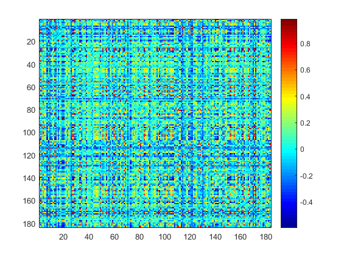
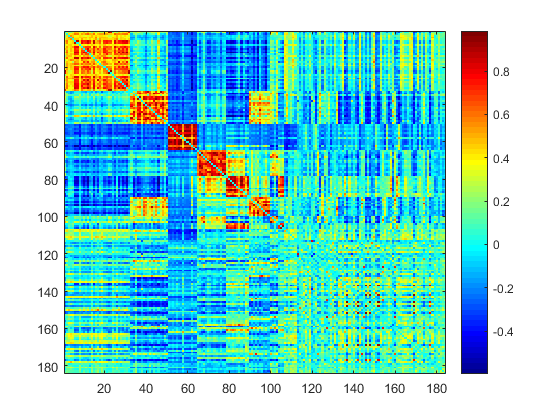
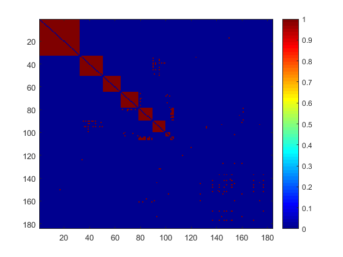

NICE network detection and thresholding example
Contents
Network detection
NICE function analyzes the data and detects the hidden comuunity, and the heatmap of the input data and reordered data is shown beneath the code
addpath('C:/Users/Yishi/Dropbox/NICE_marker/NICE_folder/NICE_detection') w=csvread('w.csv'); cor_f=csvread('cor_fvicc.csv'); cor=(exp(cor_f*2)-1)./(exp(cor_f*2)+1); [CindxVICC,CIDVICC,ClistVICC]=NICE(w, 0.2, 0, 1); warning off; cor_w=squareform(cor); figure;imagesc(cor_w);colormap jet;colorbar;snapnow figure;imagesc(cor_w(ClistVICC,ClistVICC));colormap jet;colorbar;snapnow 
In and Out network thresholding
The correlation is separated into in-network and out-network groups based on the
addpath('C:/Users/Yishi/Dropbox/NICE_marker/NICE_folder/In_n_Out_thres') edge_ind_matrix=zeros(184,184); for i=1:8 edge_ind_matrix(CindxVICC==CIDVICC(i),CindxVICC==CIDVICC(i))=1; end for i=1:184 edge_ind_matrix(i,i)=0; end in_edge_ind=find(squareform(edge_ind_matrix)==1); out_edge_ind=find(squareform(edge_ind_matrix)==0); CorZVICC_n0_in=cor_f(in_edge_ind); CorZVICC_n0_out=cor_f(out_edge_ind); cd C:/Users/Yishi/Dropbox/NICE_marker/NICE_folder/In_n_Out_thres csvwrite('all.csv',cor_f); csvwrite('in.csv',CorZVICC_n0_in); csvwrite('out.csv',CorZVICC_n0_out); system('R CMD BATCH myloccov2.R'); system('R CMD BATCH mylocfdr.R'); system('R CMD BATCH mylocmle.R'); system('R CMD BATCH locfdr_in_n_out.R'); edge_length=length(cor_f); locfdr_all_in_out=csvread('fdr_p0.csv'); p0_all=locfdr_all_in_out(edge_length+1); p0_in=locfdr_all_in_out(edge_length+2); p0_out=locfdr_all_in_out(edge_length+3); locfdr_list=locfdr_all_in_out(1:edge_length); thres_in=1/(4*p0_in/(1-p0_in)*(1-p0_all)/p0_all+1); thres_out=1/(4*p0_out/(1-p0_out)*(1-p0_all)/p0_all+1); locfdr_thres=locfdr_list; locfdr_thres(in_edge_ind)=locfdr_list(in_edge_ind)<=thres_in; locfdr_thres(out_edge_ind)=locfdr_list(out_edge_ind)<=thres_out; VICC_thres=squareform(locfdr_thres); figure;imagesc(VICC_thres(ClistVICC,ClistVICC));colormap jet;colorbar;snapnow